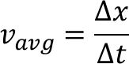

Your interpretation of velocity is likely very similar to the scientific definition.
We have all seen speed limit signs denoting a certain miles per hour rate that you cannot and should not drive above.
Speed is a scalar quantity that refers to "how fast an object is moving." Speed can be thought of as the rate at which an object covers distance.
A fast-moving object has a high speed and covers a relatively large distance in a short amount of time.
Contrast this to a slow-moving object that has a low speed;
it covers a relatively small amount of distance in the same amount of time. An object with no movement at all has a zero speed.
Velocity in contrast is a vector quantity, therefore, it includes both magnitude (speed) and direction.
Velocity is defined as "the rate at which an object changes its position."
Therefore, if a person takes 3 steps to the right along the x-axis, and 1 to the left on the x-axis in one second,
we compute the person’s velocity to be 2 steps/second in the x-direction. In general, velocity is defined as the change in position
divided by the time of that change. Mathematically, this can be written as:
In the above equation ▲x represents the change in position of the object in one time step,
and ▲t is the length of the time step. ▲t is a special variable and an important component of a simulation step.
You may not see this right away, but as you get to more complex simulations, you will see that making ▲t small will generate more accurate behaviors.
However, there is a tradeoff. Suppose you want to generate the behavior of your system for t seconds from the start of the simulation.
t is called the simulation time. If we reduce ▲t, we may make our simulation results more accurate, but our simulation will take longer to run.
Therefore, there is a tradeoff between how fast you want your simulation to complete, versus how accurate you want the simulated behaviors to be.
In most situations, small changes in ▲t will not make noticeable differences in the execution time of a simulation,
because computers nowadays are quite powerful.

Now, in order to accurately model the movement of our medical truck in our simulation we will need to change the position of our object (the truck) based on the set velocity.
Keep this velocity equation in mind when you design your algorithm!
As you may have seen in the video, acceleration is defined as the rate at which velocity changes.
Mathematically, this can be wriiten as:
where Δv is the change in velocity over a simulation time step, and Δt is the length of the simulation time step in seconds.
To understand acceleration, study this table. In this example, the velocity of the object changes by a constant amount every time step (second).
Note how the velocity itself changes as time advances.
What about the change in position over time? Think on the equation(s) used in your final velocity module as you prepare the next few tasks!
This is third
Our goal in this project is to learn physics by building computational models.
Here we will build a particular form of a computational model called a simulation model.
Let us explore what we mean by a simulation model. What are its essential components?
Computational modeling is the use of computers to simulate and study the behaviors of systems.
A computational model contains variables that characterize the system being studied and the relations between those variables, expressed in a mathematical form.
Computational models come in various form. One type of a computational model is a simulation model, where we model the behaviors of a system in a mathematical and logical form that can be executed as a computer program.
In the current study, we will build simulation models in kinematics,
which is a branch of physics where we model the motion of physical objects without considering the forces that cause the motion.
Since we are interested in the motion of objects, our simulation models will capture the behaviors of objects over time.
There are many ways in which we can model the behavior of an object over time.
One useful way is to define how the behavior of objects evolve over one time step.
One can then simulate or execute this model for multiple time steps to study how the behavior of the objects evolve over time.
In other words, we define the model of the system for one simulation step, and repeat the execution for a fixed number of steps.
Sometimes, we can execute the simulation in an infinite loop, until a specific termination command ends the simulation.
SImulation helps us solve problems digitally on a computer, which saves us a lot of time and money, especially when we design and build complex systems like cars, aircraft, spacecraft, and power plants. Simulations also help us understand the natural and physical world, and how we may interact with the world in an effective and safe manner. To do this, we run experiments with our simulation models.
To run experiments with the model, one can vary some of the variables of the system model, to understand how the behaviors are affected by the variable values, and also to determine what variables achieve specific outcomes.
Why do we care? When you are driving a car and see a sharp bend ahead, you know you have to slow down to negotiate the bend; but how often do you think of the deceleration needed to slow down the car to a safe speed? You may not, but the engineers who design the car do. Very often, these engineers create simulation models to study and design how to provide safe braking functions.
So far, all of our actions happen as soon as the green flag is clicked. As a means of adding more structure to the program, let’s create a model for a simulation step. To do so, initial variable creation will still happen at the green flag (such as asking the user for input and setting the respective variable to the submitted answer), but the simulation actions will take place in a simulation step that is called once all variables are initialized.
Introduction to the Conceptual Modeling: We talked about building computational models earlier to describe motion of physical objects. We also saw that computational modeling on a computer involved creating programs that represent computational models of the physical system or phenomenon that contain one or more objects. Initially, this entails identifying (or exploring) the parameters (variables)
that play a role in the system being modeled and the mechanisms or rules that govern the phenomenon (these then constitute the “algorithm” in the computational model).
Very often, especially as the phenomenon being modeled becomes complex, it is useful to generate a structure for the model that we are trying to construct. Scientists and engineers often call this an abstract representation of a problem. Why do we want to create an abstract representation of a problem before we build its computational model and study its behaviors?
The principle of abstraction is very important in programming. Through the process of abstraction, a programmer hides all but the relevant details about an object in order to reduce the complexity in its description, and also making it easier to write programs that define its behaviors. You can see that the same issues apply when we think of modeling a science phenomena. For example, if we are modeling the motion of an object in kinematics, the position, velocity, and acceleration of the object at any time, are important parameters or variables to describe the object’s motion. On the other hand, the shape and size of the object, its color, whether the body of the object has stripes painted on it, and who the object belongs to is irrelevant. By choosing only the relevant properties of objects, and none of the extraneous ones makes it easier for us define the behaviors and then build computational models corresponding to these behaviors. In C2STEM, we will adopt this practice of combining conceptual and computational modeling, to help us structure the modeling task, and make it easier for us to generate correct model behaviors. You can see that this idea is simultaneously supported as a good programming practice. So, let us adopt it as we move forward.
In C2STEM we will be utilizing a conceptual model in order to organize the variables and behaviors that define each physics simulation model. Think of conceptual modeling or creating an abstract representation also as big picture planning when constructing a model. What components of the model do we need to build simulation models for using physics concepts and principles (laws)? We do not want to overload our computational model (and we definitely don’t want to overthink/create confusion with too many possibilities!).
In the Conceptual Model tab, you will need to add an objects that are relevant to the scenario you are building the model for, and add the necessary properties and behaviors that agent will need to have in the computational model to correctly model the system behavior.